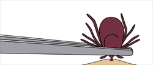
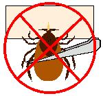
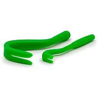
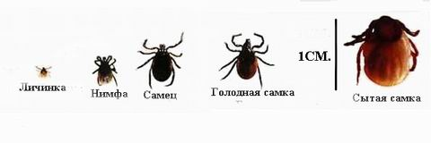
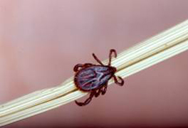

Весна-лето-осень, время обязательной обработки собак от клещей!
Если, несмотря на принятые меры, собаку укусил клещ – три недели внимательно наблюдайте за ее самочувствием. При первых же признаках вялости, отказе от еды, нужно смерить ректальную температуру, и если она повышена (норма 38.4 - 39.0) – срочно ехать в вет. клинику, и сделать анализ на наличие бабезий в крови. При своевременном обращении, пироплазмоз излечим, но каждый час промедления уменьшает шансы на благополучный исход!
У клещей нет головы. Все туловище объединено в один комплекс гнатосому (головотуловище), к которому прикрепляются ноги и ротовой аппарат. Клещи долгое время могут обходится без доступа кислорода. Из этого следует:
 
Не всегда удается подцепить клеща тонким пинцетом. Для простого, быстрого и безопасного удаления клеща рекомендую купить в зоомагазине специальный инструмент для извлечения клещей, например Tick Twister.

Для удаления клеща с помощью данного инструмента необходимо:
При удалении клеща не надо:
В массированных количествах они вызывают истощение и гибель животного. Но даже единичный укус может принести огромный вред, так как они являются переносчиками различных заболеваний.

Избавиться от блох не составляет труда – обработка современными препаратами предохраняет от заражения на срок до полугода.
Комары – бОльшая проблема, но, к счастью, заболевания, передаваемые ими, для средней полосы являются достаточно редкими. Выше вероятность заражения в южных регионах России. Поэтому собираясь с собакой на отдых – уточняйте эпидемиологическую ситуацию и заблаговременно обрабатывайте собаку соответствующими препаратами.
Клещи – вот главный враг и «головная боль» всех владельцев собак.
Иксодовые клещи распространены повсеместно, их зараженность пироплазмой носит массовый характер. Средств от них, дающих 100% гарантию надежности – не существует! Проблема состоит в том, что высокотоксичные соединения, вызывающие гарантированную гибель клеща – наносят вред и самой собаке. К тому же, некоторые вещества имеют способность постепенно накапливаться в организме. А защищаться от клещей приходится не менее 6 месяцев в году! Выбирая препарат, приходится балансировать между надежностью и токсичностью. Поэтому, обязательно смотрите, какое активное вещество используется. Если производитель не указывает состав – не покупайте! Внимательно читайте инструкции производителя, а не пользуйтесь советами друзей по прогулкам!
Что выбрать - капли на холку, спрей или ошейник?
Все зависит от конкретной ситуации. При высокой концентрации клещей, для большей надежности, можно комбинировать капли и спрей, или спрей и ошейник. Главное, чтобы активное вещество в них было из разных групп, что бы избежать передозировки.
Спреи начинают действовать сразу после обработки.
Капли на холку должны впитаться в кожу и распределиться по ней, на это обычно уходит не менее суток.
(Merial, Франция) - действующее вещество фипронил
(Merial, Франция) - действующее вещество фипронил
(Novartis Animal Health, Германия) - действующее вещество пирипрол
(Bayer , Германия) - действующие вещества имидаклоприд и перметрин
(Bayer , Германия) - действующее вещество пропоксур
(HARTZ , США) - действующее вещество фенотрин
(Астрафарм, Россия) – действующие вещества фипронил, бензилбензоат, диметилфталат
(Астрафарм, Россия) – действующие вещества фипронил, бензилбензоат, диэтилтолуамид, ювемон
(Агроветзащита, Россия) – действующее вещество фипронил
(Агроветзащита, Россия) – действующее вещество фипронил
(Апи-Сан, Россия) – действующее вещество диазинон
(Апи-Сан, Россия) – действующее вещество перметрин
(НПФ «Экопром», Россия) – действующие вещества фипронил, пирипроксифен
(НПФ «Экопром», Россия) – действующие вещества фипронил, пирипроксифен
(НПФ «Экопром», Россия) – действующие вещества фипронил, перметрин
(НПФ «Экопром», Россия) – действующее вещество перметрин
Ошейники – содержат нерастворимые соединения долговременного действия, которые постепенно переходят на шерсть. Начинают действовать через несколько дней, когда вещество распределится. Носить ошейник нужно постоянно, не снимая.
(Beaphar, Голландия) - действующее вещество диазинон
(Bayer, Германия) – действующее вещество пропаксур
Ошейники не рекомендуются для кеесхондов по следующим причинам.
Пироплазмоз - кровепаразитарное заболевание, вызываемое простейшим паразитом Piroplasma (Babesia) canis. Переносчиком этого заболевания являются иксодовые клещи. Заболевание обладает ярко выраженной весенней и осенней сезонностью. Пики приходятся на май и сентябрь.

Как протекает болезнь. (В.В. Белименко)
Пироплазмоз протекает сверхосторо, остро и хронически. Инкубационный период от 2 до 7 дней. Но, инкубационный период сильно варьирует в зависимости от возраста животного.
При сверхостром течении патологических процесс развивается очень быстро без проявления клинических признаков.
При остром течении заболевания вызывает лихорадку, резкое повышение температуры тела до 41-420С, удерживающееся в течение 2-3 суток. У совсем молодых собак, у которых смерть наступает очень быстро, повышение температуры в начале заболевания может отсутствовать. У собак отмечаются отсутствие аппетита, депрессия, угнетенное состояние, слабый нитевидный пульс (до 120-160 ударов в минуту). Дыхание учащенное (до 36-48 в минуту) и затрудненное, у молодых собак часто со стоном. Слизистые оболочки ротовой полости и конъюнктива анемичны и желтушны. Интенсивное разрушение эритроцитов сопровождается нефритом. Походка становится затруднённой, появляется гемоглобинурия (при этом моча становится красноватого или кофейного цвета). Помимо вышеперечисленного, отмечают также рвоту, тусклые глаза с гнойными корками в углах, желто-зелёные истечения из носа. В подавляющем большинстве случаев наблюдают гемолитическую анемию вследствие массового разрушения эритроцитов, интоксикацию, поражение центральной нервной системы. Иногда отмечается поражение кожных покровов типа крапивницы, геморрагические пятна. Зачастую наблюдаются мышечные и суставные боли. При отсутствии своевременной помощи животные, как правило, погибают на 3-5 день болезни
Хроническое течение часто проходит у собак, ранее переболевших пироплазмозом, а также у животных с повышенной резистентностью организма. Эта форма болезни характеризуется развитием анемии, мышечной слабостью и истощением. У больных животных также отмечается повышение температуры до 40-410С в первые дни болезни. Далее температура снижается до нормы (в среднем, 38-390С). Животные вялые, аппетит снижен. Нередко появляются поносы с ярко-желтым окрашиванием фекальных масс. Продолжительность болезни 3-8 недель. Болезнь, как правило, заканчивается постепенным выздоровлением.
После переболевания у собак формируется так называемый нестерильный иммунитет (премуниция). Антитела к возбудителю сохраняются в организме до его исчезновения. Довольно часто у собак после переболевания наблюдается бабезионосительство, которое длится до 1 года. В этот период у собаки не отмечаются клинические признаки, но при лабораторных исследования выявляются бабезии.
«Неклассические» случаи.
Собака моей подруги, а это был щенок, была подобрана с улицы в ноябре месяце. Это была жизнерадостная и активная девочка, здоровая по всем признакам и анализам. Но через 3 дня после того, как ее принесли домой ей стало очень плохо: она стала вялой, апатичной, отказывалась от еды и слабела с каждым часом, слизистые стали очень бледными. Предварительный диагноз врачей – энтерит! Анализы показали, что количество эритроцитов, а соответственно гемоглобина (белок, который соединяется с кислородом и переносит его ко всем органам) катастрофически мало, у щенка наступила сильная гипоксия. Никому тогда не пришло в голову, что у маленького щенка в ноябре месяце может быть пироплазмоз, причем и температура у нее не повышалась, а ведь это один из признаков, моча была прозрачная, и слизистые не желтушные, а белые. Было назначено переливание крови и симптоматическое лечение от энтерита. На сутки девочка ожила, появился аппетит. А потом снова рецидив и опять количество эритроцитов катастрофически упало, появилась сильная отдышка, пришлось положить ее в кислородную камеру. Врачи недоумевали, были предположения, что у нее открылось внутреннее кровотечение, но не УЗИ, не рентген не подтвердили это, думали что это аллергия, анализы и это не подтвердили, предположили что у нее инфекционное заболевание, глисты, но и это не подтвердилось. Тогда было решено взять анализ на пироплазмоз, ну, просто так, потому что никто не верил в эту версию. Лаборант несколько раз проводил анализ, чтобы обнаружить паразитов и в конце концов подтвердил диагноз. Срочно было проведено второе переливание крови и начато лечение от пироплазмоза. Через пять дней щенок чувствовал себя прекрасно. Вот такая история. Врачи объяснили нам такое «неклассическое» протекание болезни тем, что щенок мог получить паразитов от матери, еще в утробе, что вызвало хроническое протекание болезни в такой «неклассической» форме.
Вывод один - если Ваша собака в период с мая по ноябрь месяц вдруг начинает недомогать и даже если симптомы недомогания мало напоминают симптомы пироплазмоза, СРОЧНО бегите к врачу и ТРЕБУЙТЕ многократного анализа на пироплазмоз, даже если первый анализ не подтвердит Ваши опасения попросите сделать еще, в нашем случае, пироплазмы были обнаружены на третьем! стекле.
Как не заразиться пироплазмозом.
Риск заражения пироплазмозом будет существовать всегда, потому что сегодня ареал обитания иксодовых клещей расширился до невероятных размеров они обитают сегодня не только в лесах, но и на дачах и в городах. В настоящее время не проводят специальных обработок в городских парках и дворах, поэтому клещи прочно обосновались в мегаполисе. Отсюда большое количество собак заражается пироплазмозом в собственном дворе. Что же делать нам, хозяевам?
Первое – начиная с апреля месяца через каждые 2 недели обрабатывать собаку специальными средствами (капли, спреи). Какими? Каждый выбирает для себя сам, здесь я не советчик, наоборот, хочу у Вас узнать, чем Вы пользуетесь, что Вам помогает, если напишите в комментариях, буду очень признательна.
Второе – после каждой прогулки внимательно осматривайте собаку, потому что прежде чем укусить, клещ ползает по телу собаки около часа, выискивая нужное место для укуса.
Третье – гуляйте в проверенных местах, не рекомендую возить собаку в лес, на рыбалку, ну, не знаю, на луг незнакомый, т.к. скопление клещей в дикой природе гораздо выше, чем в городе или у Вас на даче.
Четвертое – обязательно косите траву у себя на даче, т.к. любимое место обитания клещей высокая трава, а не деревья, как думают многие.
Пятое – обрабатывайте весной и осенью свой загородный участок специальными средствами. Я пользуюсь Цифоксом или Защитой-велт. Активным веществом этих препаратов является циперметрин. Он губительно действует на клещей, но безопасен для людей и животных. Обработку надо проводить в сухую погоду, чтобы дождь не смыл препарат с травы.
Шестое – я бы еще посоветовала каждый день мерить собаке температуру, т.к. все-таки высокая температура это один из симптомов неблагополучия в организме животного и Вы всегда сможете быстро среагировать на возникшую ситуацию. Тем более, что многие собаки отличаются большой выносливостью и не проявляют сразу признаки недомогания, т.е. на фоне высокой температуры они могут сохранять аппетит и активность, пока не станет совсем плохо, а это уже может быть смертельно поздно.